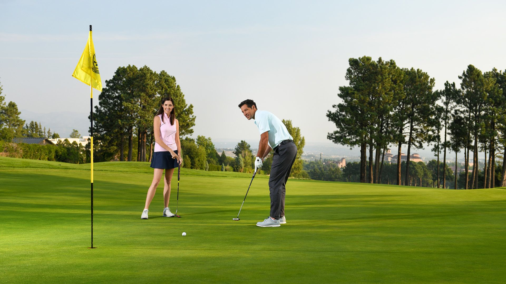

WHAT IS GOLF?
Golf, a cross-country game in which a player strikes a small ball with various clubs from a series of starting points (teeing grounds) into a series of holes on a course. The player who holes his ball in the fewest strokes wins. The origins of the game are difficult to ascertain, although evidence now suggests that early forms of golf were played in the Netherlands first and then in Scotland.